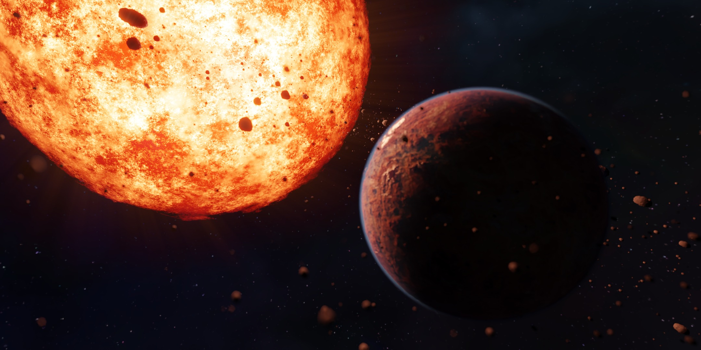

Personal Project · Sci-Fi WorldbuildingEigenes Projekt · Sci-Fi-Worldbuilding
Dark Space
A personal sci-fi visual development project exploring a dry mining civilization on a tidally locked planet.
Ein eigenes Sci-Fi-Visual-Development-Projekt über eine trockene Bergbau-Zivilisation auf einem gebunden rotierenden Planeten.
BlenderVideoSci-FiSci-FiConceptKonzept

Core IdeaKernidee
One side always faces the sunEine Seite zeigt dauerhaft zur Sonne
Life exists near the border between heat and darknessLeben existiert nahe der Grenze zwischen Hitze und Dunkelheit